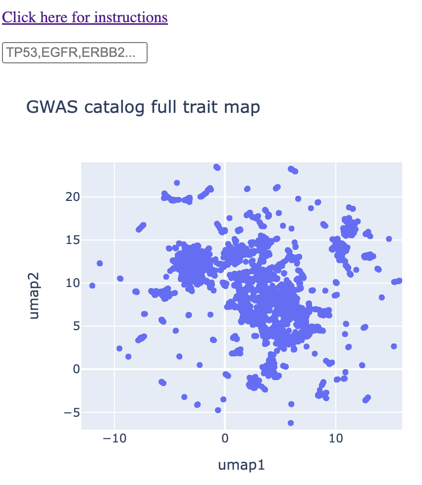
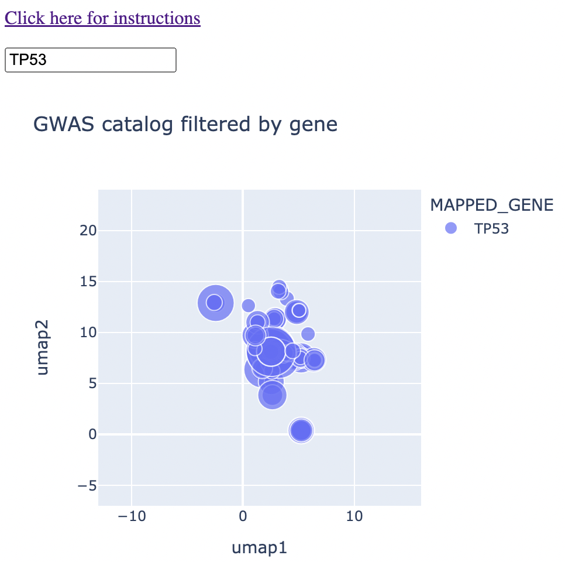
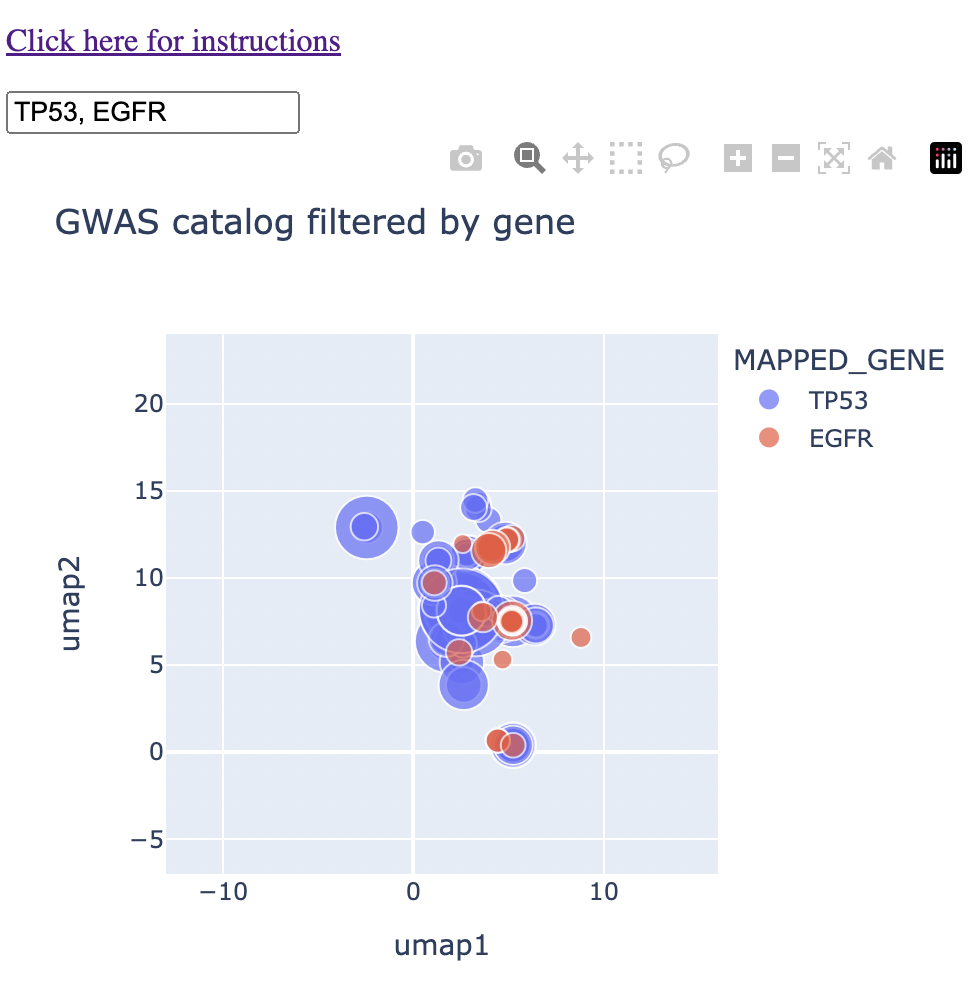
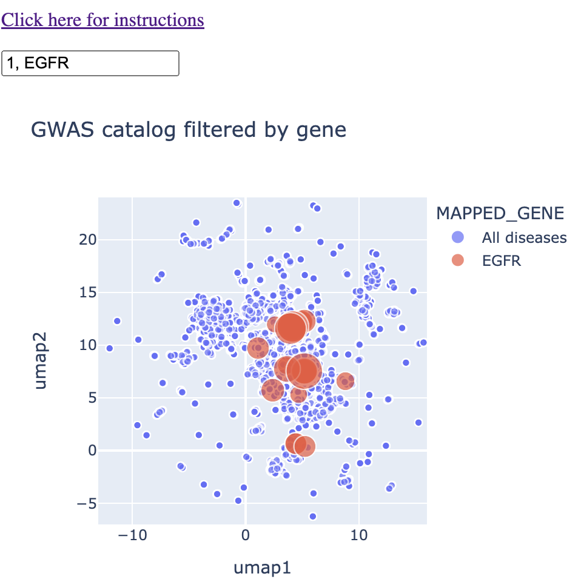

Instructions for using this web app
Click here to return to the app.
Click here to go to my article on the motivation behind my "mapping" solutions.
General features
You will be presented with a map that has a text box on top. Below this text box is a UMAP of every GWAS trait in the GWAS catalog. Each point on the map represents a different GWAS trait. You can hover over each point, and you'll see a pop-up box that tells you the exact trait correspoinding to that point. If you're on mobile, you'll have to tap on a given point to get that information.

When you type in a single gene (eg. TP53) into the text box, the map will shrink down to only traits that are associated with that gene. You'll see that these points vary in size. The size correspoinds to the negative log 10 of the p-value. In other words, p = 0.01 corresponds to 2, p = 0.001 corresponds to 3, and so on.

When you type in multiple genes separated by a comma (eg. TP53 and EGFR), you'll see that they both show up on the map, with a different color corresponding to each gene. From here, you can identify genes that are near to each other on the map, which corresponds not necessarily to sharing the same trait, but sharing the same context. Maybe they're both associated with specific brain disorders or a type of blood measurement. You'll immediately see that on the map.

Finally, if you type a "1" into the text box as well, you'll get the remainder of the diseases. The reason I don't have this in as a default is because it puts so many points on the map that it makes hovering/clicking on the right points a bit more frustrating.

Advanced features
This map is made with an interactive graphics library called Plotly. The instructions below come from my news map web app, which also uses Plotly.
You'll see a number of buttons on the top right side of the map. I will say right here that if you click on any of them, or anything weird happens to the map, you can go back to the default view by double clicking/tapping on the map. Here is a zoom-in of the buttons.

Images
You'll see on the left side a camera button. You can use that to get an image of the map in its state.
Zooming
Next to that is a zoom button. That is activated by default. It means that if you click/tap and slide, you'll see a square appear with one corner where you first clicked/tapped and one corner where your cursor/finger currently is. Let go and you'll see that you've zoomed into a particlar region of the map. Below, I zoom into the southernmost region of the map.

Note again that you can zoom back out by double clicking/tapping.
You'll see that there is a box with a plus sign and a box with a minus sign 6 and 7 buttons from the left, respectively. These are also zoom buttons that will zoom depending on where the map is centered. These are only relevant if you're panning the map, which I describe below.
Panning
The third button from the left is two perpendicular bidirectional arrows. If you click/tap on that, then you can click/tap and hold on the map and drag it around. For example, I take the original view and drag everything over to the right below.

None of the other buttons are relevant at this time, but may be down the line.